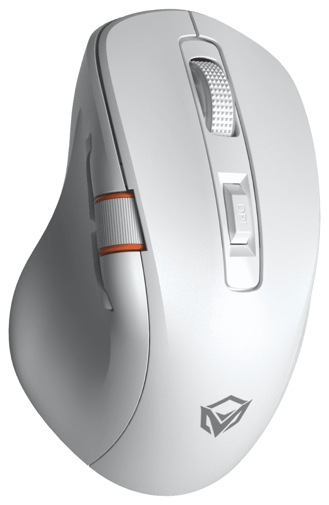

1
Plug in the cable or receiver
Connect the GW32 with its USB-C cable, or plug in the 2.4G receiver and switch the mouse to 2.4G mode. Then open this page in Chrome, Edge, Brave or Opera.
Customize your Meetion GW32 gaming mouse right here. Remap all 9 buttons, tune 4 DPI levels, switch RGB lighting effects and set the polling rate — no installer, no .exe, works on macOS and Apple Silicon.

The GW32 stores two button layouts. Edit either one here, then press Apply to save. Switch which layout the mouse uses with the Layout switch in the bar at the top. It changes instantly.
Click a row to make it the active level. The dot sets the DPI indicator LED color. The DPI button cycles through these levels.
Brightness applies to the static effects. Color applies to single-color effects.
Higher polling rates feel more responsive but use more battery in wireless modes.
No device connected.
Meetion only publishes a Windows driver for the GW32. This page talks to the mouse directly from your browser, so the same steps work on macOS, Windows, Linux and Chromebook.
Connect the GW32 with its USB-C cable, or plug in the 2.4G receiver and switch the mouse to 2.4G mode. Then open this page in Chrome, Edge, Brave or Opera.
Pick “MEETION Mouse” in the browser’s device prompt. Nothing is installed; the browser only gets access to this one device.
Remap buttons, set DPI, lighting and polling rate, then press Apply. Settings are saved on the mouse and work over Bluetooth and 2.4G too.
Feature-for-feature with the Windows “MEETION GW32 Gaming Mouse Driver”, without the .exe.
Assign any of 9 buttons — including the side buttons and thumb wheel — to clicks, DPI, media keys, browser actions or custom keyboard shortcuts like ⌘C or Ctrl+Z.
Four DPI levels from 400 to 8000 with their own indicator colors. Choose which level is active and cycle with the DPI button.
Rainbow Wave, Breathing, Neon, Marquee, Lightning, Static and more, with speed, brightness, color and auto-sleep timer.
Switch between 125, 250, 500 and 1000 Hz report rate for smoother tracking or longer battery life.
Store two complete layouts — for example one for work and one for gaming — and switch between them instantly.
Save your setup to a file, import it on another computer, or share it with friends who own a GW32.
Works anywhere WebHID is available. Configure once over USB-C; the mouse remembers everything in every mode.
| Platform | Chrome / Edge / Brave / Opera | Safari / Firefox |
|---|---|---|
| macOS (Intel & Apple Silicon) | Supported | Not supported |
| Windows 10 / 11 | Supported | Not supported |
| Linux (Ubuntu, Fedora, Arch…) | Supported* | Not supported |
| ChromeOS / Chromebook | Supported | — |
| iPhone, iPad, Android | Not supported | Not supported |
* On Linux, allow your user to access the mouse once with a udev rule, then unplug and replug it:
echo 'SUBSYSTEM=="hidraw", ATTRS{idVendor}=="1d57", ATTRS{idProduct}=="fa6[01]", TAG+="uaccess"' | sudo tee /etc/udev/rules.d/70-meetion-gw32.rules
sudo udevadm control --reload-rules
Common questions about the Meetion GW32 software, Mac support and settings.
Meetion only provides a Windows .exe. This free web configurator works on macOS (Intel and Apple Silicon) in Chrome, Edge, Brave or Opera: connect the GW32 with its USB-C cable or 2.4G receiver, click Connect, change your settings and press Apply.
No. It runs entirely in your browser using WebHID. Nothing is downloaded or installed and no data leaves your computer — the page has no server, analytics or tracking.
You can configure the GW32 over the USB-C cable or the 2.4G receiver (switch the mouse to 2.4G mode first — the page checks that the mouse is linked and waits for it to confirm every change). Settings are saved in the mouse’s own memory, so they keep working in every mode, including Bluetooth, and on every computer you use. Configuring directly over Bluetooth isn’t supported yet.
Yes. Chrome or Chromium on Linux and ChromeOS support WebHID. On Linux, add the one-line udev rule shown above so the browser is allowed to open the mouse.
Safari and Firefox don’t implement WebHID, the browser feature that lets web pages talk to USB devices. Use Google Chrome, Microsoft Edge, Brave or Opera on a desktop computer.
The GW32 firmware only accepts settings; it can’t report them back (the official Windows driver works the same way). This page remembers what you last applied in your browser, and Export lets you keep a copy.
Click Reset, confirm, then click Apply. This writes the original layout (left, right, middle, DPI cycle, forward, back, mute, volume −, volume +), DPI 1200/2400/3200/6400, Rainbow Wave lighting and 1000 Hz polling.
The Meetion GW32 (MT-GW32) tri-mode wireless gaming mouse over its USB-C cable (USB ID 1d57:fa61) or its 2.4G receiver (1d57:fa60). Other Meetion models use different layouts and aren’t supported yet.
No. It’s an independent, free, open-source community tool created by Faisal F Rafat that speaks the same USB protocol as the official Windows driver. It isn’t affiliated with or endorsed by Meetion. Use at your own risk; you can always restore defaults with Reset, then Apply.